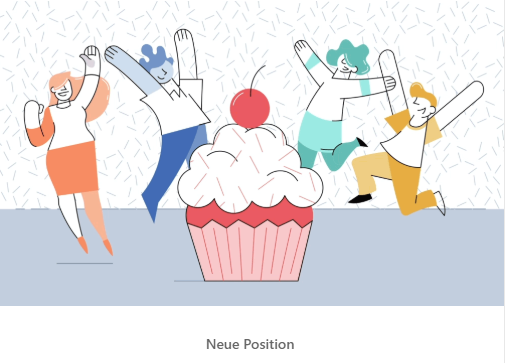

Neue Position

Dieses Jahr ist für mich privat herausfordernd, meine Frau ist nach einer Tumorbehandlung im November letzten Jahres ab der Halswirbelsäule teilquerschnittsgelähmt und kämpft sich zurück ins Leben. Ich war vier Monate lang alleinsorgend mit unserem Sohn zuhause, der zu dem Zeitpunkt gerade 1 Jahr alt geworden war. Da gehen einem tausend Fragen durch den Kopf, selten hatten wir Antworten.
Danke an RTL Deutschland, dass ich mir zumindest zu meinem Job keine Fragen stellen musste und ich nach den ersten Monaten in Teilzeit zurückkommen konnte.
Jetzt freue ich mich auf die Aufgaben in meiner neuen Position als Head of Digital Transformation in der Kommunikation, um mit den Teams noch mehr aus unseren Workflows und Tools herauszuholen und die technischen Produkte in der PR auszubauen.
Danke an Eva Messerschmidt für das Vertrauen und vielen Dank an meine bisherige Teamleiterin Julia Kikillis für die Möglichkeiten, mich in den letzten Jahren immer weiterentwickeln zu können.
Der größte Dank gilt aber meiner Frau, die immer weitermacht, egal wie schwer es ist.